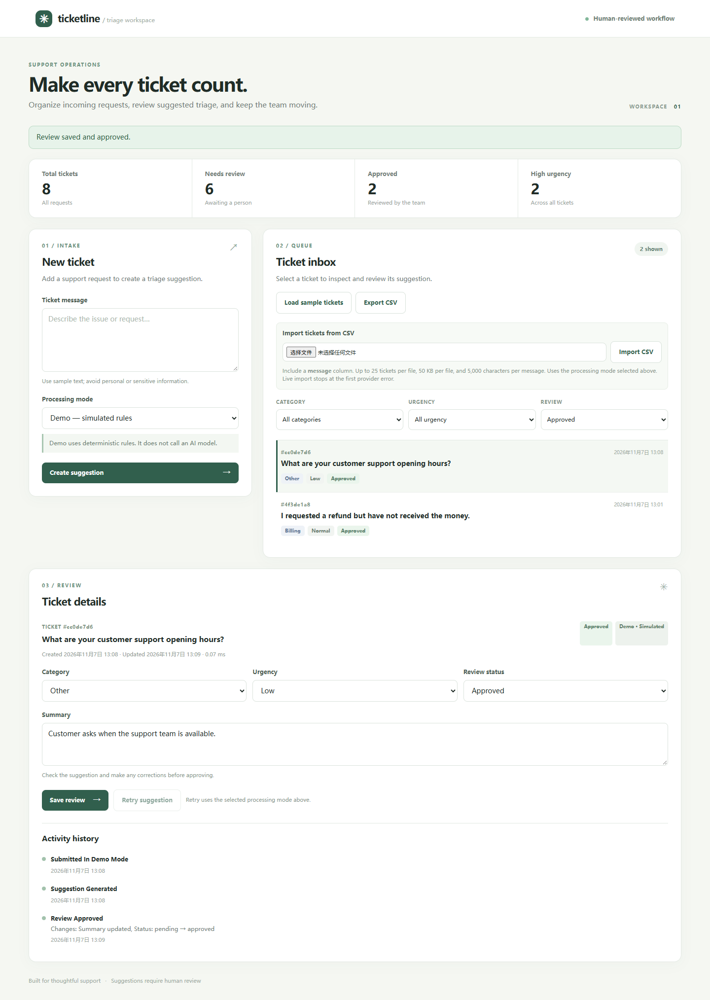

Bring the work in
Submit a ticket or import a small CSV batch. Filter the inbox by category, urgency, and review status.
AI-ASSISTED SUPPORT OPERATIONS
Ticketline turns incoming requests into structured suggestions, giving a support operator a clear place to review, correct, and approve each ticket.
Project showcase · Recorded deterministic demo · This page does not run the application or make AI calls.

A WORKFLOW BUILT FOR REVIEW
An operator remains in control: suggestions are editable, and the original result and review history remain available for inspection.
Submit a ticket or import a small CSV batch. Filter the inbox by category, urgency, and review status.
Generate a category, urgency, and summary using deterministic demo rules or an explicitly selected live model.
Correct and approve a suggestion, inspect the activity history, and retry failed suggestions when needed.
SEE IT IN ACTION
Follow the recorded walkthrough through ticket creation, review, and approval in the local app.
What you are watching: a recorded demonstration using simulated, deterministic triage—not live AI inference. The video contains sample tickets.
RECORDED DEMO / Runs locally, with no provider requests
UNDER THE HOOD
The browser talks to a local API. The server stores tickets and coordinates triage; live inference happens only when configured and selected.
Plain HTML, CSS, and JavaScript for intake and human review.
Validates requests, manages the workflow, and serves the interface.
Persists tickets, original suggestions, and activity history.
Runs deterministic demo rules or calls the configured model from the server.
EVIDENCE & LIMITATIONS
The repository includes automated checks, evaluation scripts, datasets, and reports so that the work can be inspected and reproduced.
Application, storage, evaluation, and simulated SDK behavior are tested without making model requests. See the repository for the current test suite and how to run it.
The development and holdout sets each contain 30 manually reviewed synthetic tickets. The live structured model has not been evaluated on the holdout; demo results are not AI accuracy claims.
RUN IT YOURSELF
Download or clone the project, install its dependencies, and start the server. Demo mode needs no credentials. Python 3.13 is the verified development environment.
For live mode, run the server with --live and configure the provider API key on the server. Live requests may incur charges. The browser does not receive the provider key.
Windows / PowerShell
python -m venv .venv
.\.venv\Scripts\python.exe -m pip install -r requirements-lock.txt
.\.venv\Scripts\python.exe run_server.pymacOS / Linux
python3 -m venv .venv
.venv/bin/python -m pip install -r requirements-lock.txt
.venv/bin/python run_server.pyThen open http://127.0.0.1:8000 on your own computer.
GO DEEPER
Read the decisions, measurements, demo instructions, and portfolio notes behind the build.